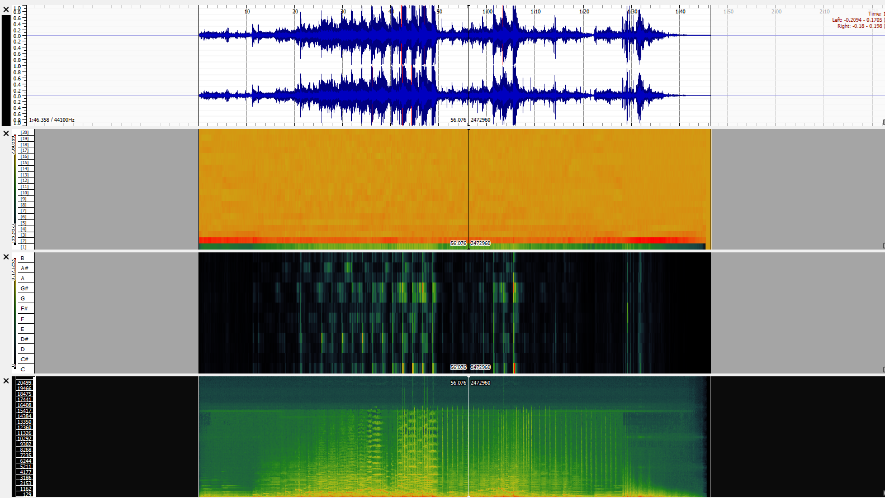
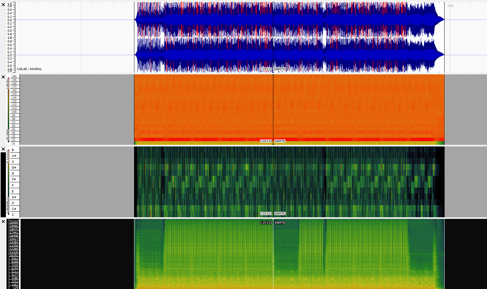

Track 3: Frontline, by Yung Kartz

Track 1: Breathing, by Spectacular Sound Productions

Track 2: Inspirational Outlook, by Scott Holmes
Track 3: Frontline, by Yung Kartz
| Track | Chromagram | Mel Frequency (MFCC) | Spectogram |
|---|---|---|---|
| Track 1 |  |
 |
|
| Track 2 |  |
||
| Track 3 |  |
 |
 |
Chroma feature across the three tracks: The chromagram histograms are unique to each of the songs and relfect the intesnsity of sounds in relation to the time frequency. Track 2 is a particularly upbeat, fast paced pop song. The histograms capture this as they are thicker, and more dense in shape than the likes of Track 1, which is a gentle, slower paced classical song featuring fewer bars that are much thinner. The third track features a strong beat as expected with a hip-hop song but is still quite a calm track, with a slower pace than Track 2. The consistent rhythm of Track 3 can be related to the similarities in size and shape of most of the corresponding histograms. Overall, the 3 histogram datasets are very different, which is unsurpsing due to the three tracks being from completely different genres, Track 1 being classical, Track 2 being pop, and Track 3 being hiphop.